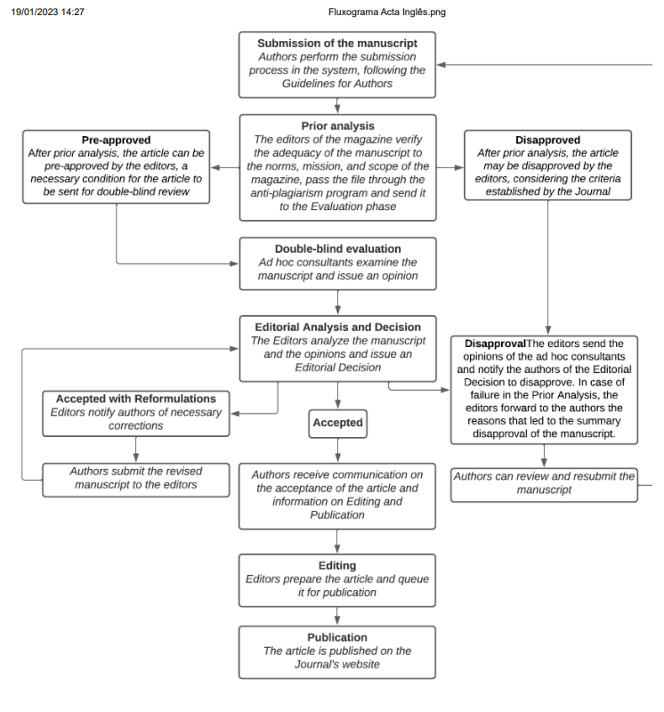

ISSN 2178-5198 printed version
ISSN 2178-5201 online version
INSTRUCTIONS TO AUTHORS
|
ISSN 2178-5198 printed version |
|
As part of the submission process, authors must verify submission compliance against all items listed below. Submissions that do not comply with the rules will be returned to the authors.
|
Flowchart of the submission, evaluation, and publication process
 |
1 - Registration Registration in the system and subsequent access, through login and password, are mandatory for the submission of works, as well as for monitoring the ongoing editorial process. Acess on an existing account or Register a new one. 2 - Procedures and care before submission
3 - Instructions for article submission
4 - Bibliographic referencing
|
To avoid conflicts of interest and to ensure impartiality, during the evaluation process (cf. Flowchart), the identity of the reviewers and the authors are kept confidential. After verification by the editorial team of the adequacy of the manuscript to the focus and scope of the Journal and compliance with the standards informed on the website, the articles are evaluated, applying the double-blind process, that is, two referees external to the Journal evaluate them. The manuscript that receives an acceptance and a rejection is forwarded to a third reviewer, also anonymous and external to the Journal. Authors can follow the evaluation process of their submissions in SEER, using their login and password for access. In the environment intended for authors, it is possible to access opinions. A list of guidelines is available to be examined by the reviewers, which include the following aspects: originality of the article; pertinence of the discussion, of the informed data, of the interpretation, of the methodology and of the cited references; clarity and adequacy of the title, abstract, keywords, introduction, development, and conclusion. Acceptance of the article can be total or conditional on the reformulations and corrections proposed by the evaluators and editors. Structure and content modifications suggested during the evaluation process will only be carried out with the agreement of the authors. These guidelines are followed both in the evaluation of articles submitted in a continuous flow and in the evaluation of articles submitted to thematic calls. Requests for changes and redrafting Approved articles The acceptance of the manuscript does not guarantee its immediate publication. Once approved, its publication will respect the submission date and geographic location criteria of the authors' institutions. In order to avoid endogeny and to guarantee the diversity of the authors of the published articles, only after a two-year interval, this journal will publish another article by the same author. |
Is the subject addressed in the article relevant to be published by the journal? * Is the article original? * Does the title clearly and sufficiently reflect the content of the article? * Are the presentation, organization, and length of the article satisfactory? * Does the introduction review the topic addressed and make the objective of the work clear? * Is the discussion relevant and sufficient? * Do the data justify the interpretations? * Is there a need to add any item that can enrich the article? * Is it necessary to reduce or remove any part of the article? * Are illustrations and tables necessary and relevant? * The figures are illustrative and have good quality for reproduction.? * Are the keywords suitable for the article? * Does the abstract give good information about the job? * Are references adequate and necessary? * Are the references written in accordance with the journal’s guidelines? * Are the authors referenced in the text cited in the references? * Were any notes made in the manuscript? * Does the research involve interviews or case studies? Check if the authors informed the approval protocol number of the Ethics Committee (Plataforma Brasil) *. Opinion on the publication of the article: Notes (if needed): |
Privacy Policy The names and addresses informed to this journal will be used exclusively for the services provided for the publication, not being made available for other purposes or to third parties. |
[Home] [About the journal] [Editorial board] [Subscriptions]
 All the content of the journal, except where otherwise noted, is licensed under
a Creative
Commons License
All the content of the journal, except where otherwise noted, is licensed under
a Creative
Commons License
Editora da Universidade Estadual de Maringá
Av. Colombo, 5790, Bloco 40
87020-900 Maringá, Paraná, Brasil
Telefone: +55 44 3011-4253